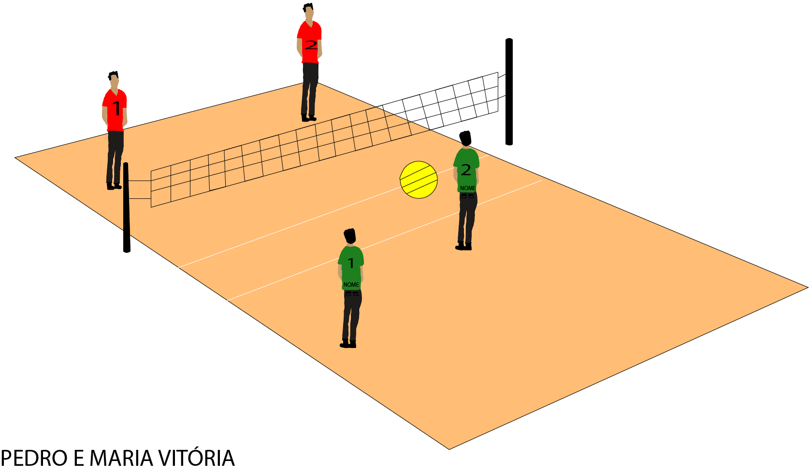
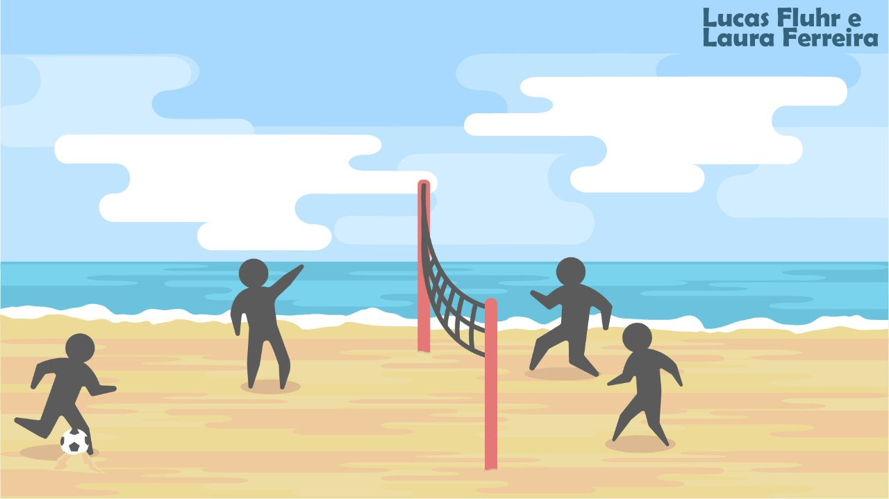
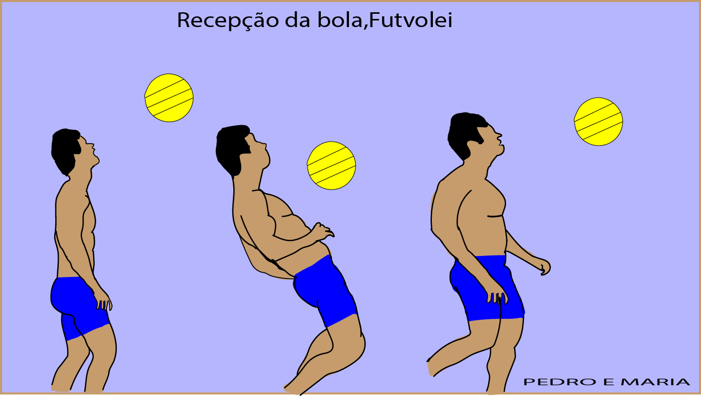
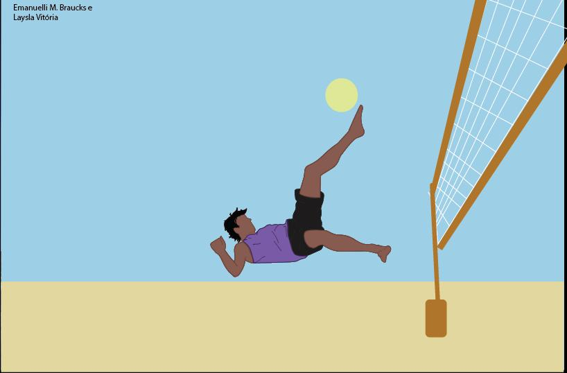

Suas regras são parecidas com as do vôlei de praia, se diferenciam principalmente pelas partes do corpo que podem ser usadas para tocar a bola. No futevôlei, os jogadores devem usar cabeça, pés, pernas, ou qualquer outra parte do corpo, exceto mãos e braços.
Estrutura da quadra
O futevôlei utiliza a mesma quadra do vôlei de praia. O piso é de areia e suas medidas são: 18m de comprimento e 9m de largura. Também deve ter uma área livre ao redor das linhas de marcação de 3m.
A rede divide a quadra ao meio, com uma altura de 2,20m para jogos masculinos, e 2,00m para femininos.

Quadra de Futevôlei
Equipamentos necessários
Os equipamentos necessários para jogar futevôlei são:
Linha de marcação da quadra
Rede desmontável
Bola
Técnicas do Futevôlei

Saque no Futevôlei: A meta do saque é jogar a bola para a quadra do adversário passando por cima da rede e dificultando a recepção. Como fazer? realizado com o pé, colocando a bola sob um pequeno monte de areia, variando a região do pé em que se chuta: lado interno, parte externa, “bico”, “peito do pé”.

Recepção no Futevôlei: A meta da recepção é executar o passe para o parceiro para que este consiga fazer o levantamento ou ataque de forma mais fácil. Como fazer? com qualquer parte do corpo, exceto mãos e braços, claro. A escolha de como será feita a recepção, com o peito, cabeça, ombros, coxa ou pé, vai depender de como vem o saque. Ataque no Futevôlei: A meta do ataque é lançar a bola na quadra oposta para marcar o ponto ou então dificultar a defesa. Como fazer? há 6 tipos de ataque: Curto: chamado também “pingada” ou “largada”. O jogador coloca a bola perto da rede. Longo: a direção da bola é no fundo da quadra, no espaço atrás dos rivais. Na diagonal: pode ser curto ou longo.

Defesa no Futevôlei: A meta da defesa é evitar que a bola toque o chão da sua quadra quando a dupla rival executa o ataque. Como fazer? os seguintes fatores devem ser levados em conta para uma boa defesa: – Posicionamento correto da dupla na quadra – Antecipação da jogada, observando o adversário e prevendo (antevendo) como ele irá atacar, assim você decide melhor onde e como fazer a defesa.